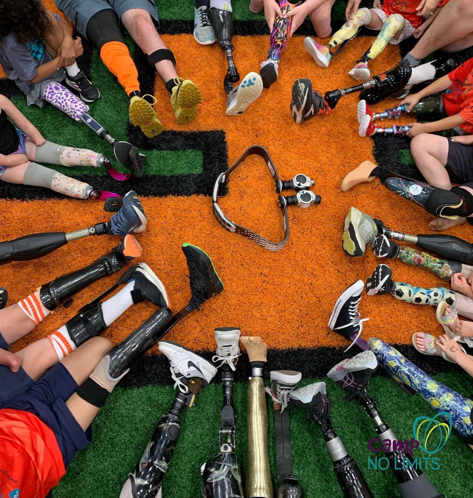
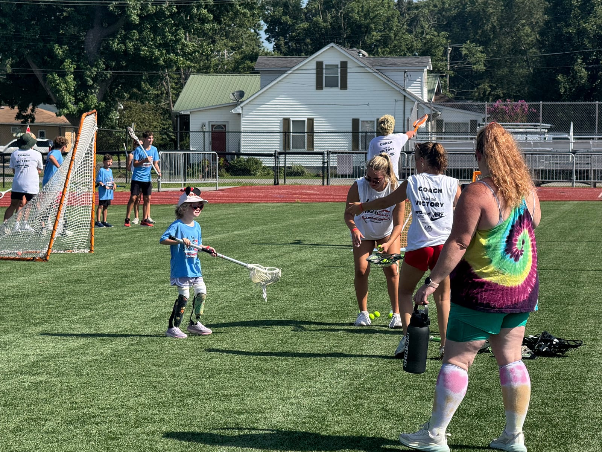

Camp No Limits
Camp No Limits is a nationwide program for children with limb loss or limb differences and their families. While there isn't currently a camp in Ohio, there are several nearby options. We've been attending the camp just north of Chicago, and it’s been one of the most impactful communities we’ve been a part of.
The camp offers adaptive recreation, therapy sessions, mentorship, and family workshops in a fun and supportive setting. What makes Camp No Limits special is how it brings together kids, parents, and adult mentors with limb differences, offering connection and encouragement for everyone. Gwen loves being surrounded by kids like her, and as parents, we’ve learned so much from talking to other families.

Prosthetics lined up at Camp No Limits.
Camp Maple Leaf – Candou Camp
Camp Maple Leaf is located in Ontario, Canada, and offers several inclusive summer programs. One of their special sessions, called Candou Camp, is dedicated to youth with limb differences.
Designed specifically for children ages 8–16 with limb loss or limb differences, Candou Camp provides a safe and empowering environment where kids can explore the outdoors, build confidence, and connect with peers who share similar experiences. Activities include canoeing, swimming, arts and crafts, campfires, team challenges, and more. It’s a chance to step away from the daily routine and into a supportive, inclusive community.
Candou Camp is held during a dedicated week in the summer, with a trained staff team and accessible facilities to ensure a positive and welcoming experience for every camper.
Camp HALO
Camp HALO (Hand | Arm | Leg | Other) is a free day camp hosted by Nationwide Children’s Hospital at Recreation Unlimited in Ashley, Ohio. The event is designed specifically for children with limb differences and their families.
The day includes family-friendly activities, dedicated fun sessions for kids and teens, and informative education sessions for parents. Lunch and snacks are provided. It’s a welcoming environment where families can connect, kids can play, and everyone can learn from shared experiences.
Recreation Unlimited
Recreation Unlimited is located in Ashley, Ohio, and offers year-round camps and programs for individuals with physical and developmental disabilities, including children, teens, and adults. Their fully accessible campus includes cabins, a gym, archery, a fishing pond, and adventure courses designed for all ability levels.
The camp runs day, weekend, and week-long sessions with a focus on recreation, inclusion, and personal growth. Trained staff and volunteers support every camper, and medical personnel are on-site for peace of mind. Programs are thoughtfully structured to encourage independence, build friendships, and create a safe space to try new things.
Whether you’re looking for summer camp or a seasonal weekend retreat, Recreation Unlimited is a great local option that welcomes campers of all abilities and backgrounds.
Adventure Amputee Camp
Adventure Amputee Camp is a week-long summer camp in the Blue Ridge Mountains of North Carolina, created for youth ages 8–17 living with limb loss or limb differences.
The camp emphasizes outdoor adventure and personal growth, offering exciting activities like whitewater rafting, water skiing, zip lining, canoeing, and more—all adapted to meet the campers' needs. The goal is to help kids build confidence, resilience, and lasting friendships in a fun, natural setting.
NubAbility All Sports Camp
We took Gwen to the NubAbility All Sports Camp in Du Quoin, Illinois, and had a great experience. We were genuinely impressed by how thoughtfully the camp was organized and how clearly NubAbility communicated with families. The four-day camp brings together children with limb differences and limb-different coaches who teach adaptive techniques for mainstream sports.
Gwen participated in the Little League group, which is designed very well for younger children. The group moved from sport to sport with a set of dedicated coaches who stayed with them throughout camp. At each stop, coaches for that specific sport had a short activity or game ready for the kids. The sessions were usually around 20 minutes during Gwen's camp, which kept things moving and held the children's attention. Older campers choose a primary sport to focus on while also having opportunities to try other activities.
The communication before and during camp was especially impressive. NubAbility hosted Zoom calls for new families to explain what to expect. Before camp, we received a PDF with Gwen's individualized schedule, including the time and location of every sport and activity for all four days. We received a printed copy at check-in, and there was also a dinner where new families could meet returning families and go over the camp details together.
Families received updates by text each day. Gwen was also given four camp shirts, one for each day, and all of the campers coordinated by wearing the same shirt each day. Small details like that made a large event feel organized and easy to follow.
The best part was the number of children Gwen met who had limb differences like hers. There were more than ten children around her age in the Little League group, and she had a great time playing alongside them. At the end of camp, the Little League campers were asked to choose their favorite sport. We expected Gwen to pick soccer, dance, or cheer because those are activities she already enjoys at home. Instead, she chose wrestling, which we never would have guessed or even thought to have her try. We are very glad she had the chance to experience so many new sports and activities that would have been difficult to find anywhere else.

Gwen trying lacrosse with the Little League group at NubAbility All Sports Camp.
Most NubAbility camps serve children ages 4 to 17. Families can review current dates, registration details, and what to expect in the NubAbility camp FAQ.
Lucky Fin Weekend
The Lucky Fin Project supports kids with limb differences by creating community, raising awareness, and celebrating differences. Every year, they host a Lucky Fin Weekend in Michigan, and we’ve taken Gwen there to connect with other families.
The event is filled with meetups, educational sessions, and social activities for kids and their families. Gwen gets to play and make friends with other limb-different kids, and we get to meet parents who’ve been through similar experiences. It’s a great reminder that we’re not alone—and a fun and uplifting weekend for the whole family.